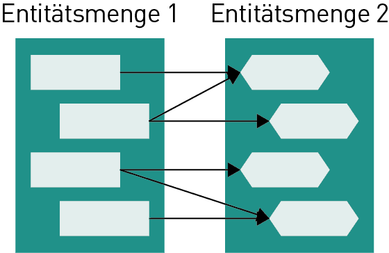
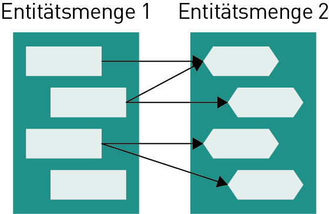

| Beziehungstyp | Schematische Darstellung | Oben: Martin-Notation Mitte/Unten: UML-Notation Unten: Chen-Notation | Anwendungsbeispiel |
|---|---|---|---|
| N:M |  | Einem Kunden gehört mindestens ein Artikel und jeder Artikel gehört zu mindestens einem Kunden. | |
| N:CM |  | Einem Kunden gehören beliebig viele Artikel und jeder Artikel gehört zu mindestens einem Kunden. | |
| CN:CM | Einem Kunden gehören beliebig viele Artikel und jeder Artikel gehört zu beliebig vielen Kunden. |